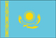
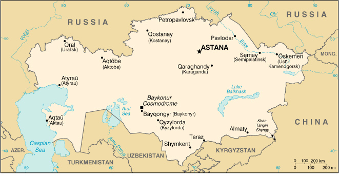

|
Kazakhstan |  |
| Introduction Geography People Government Economy Communications Transportation Military Transnational Issues | ||
|  | ||
| Kazakhstan | Introduction | Top of Page |
| Background: | Native Kazakhs, a mix of Turkic and Mongol nomadic tribes who migrated into the region in the 13th century, were rarely united as a single nation. The area was conquered by Russia in the 18th century and Kazakhstan became a Soviet Republic in 1936. During the 1950s and 1960s agricultural "Virgin Lands" program, Soviet citizens were encouraged to help cultivate Kazakhstan's northern pastures. This influx of immigrants (mostly Russians, but also some other deported nationalities) skewed the ethnic mixture and enabled non-Kazakhs to outnumber natives. Independence has caused many of these newcomers to emigrate. Current issues include: developing a cohesive national identity; expanding the development of the country's vast energy resources and exporting them to world markets; and continuing to strengthen relations with neighboring states and other foreign powers. |
| Kazakhstan | Geography | Top of Page |
| Location: | Central Asia, northwest of China |
| Geographic coordinates: | 48 00 N, 68 00 E |
| Map references: | Commonwealth of Independent States |
| Area: |
total:
2,717,300 sq km
land: 2,669,800 sq km water: 47,500 sq km |
| Area - comparative: | slightly less than four times the size of Texas |
| Land boundaries: |
total:
12,012 km
border countries: China 1,533 km, Kyrgyzstan 1,051 km, Russia 6,846 km, Turkmenistan 379 km, Uzbekistan 2,203 km |
| Coastline: | 0 km (landlocked); note - Kazakhstan borders the Aral Sea, now split into two bodies of water (1,070 km), and the Caspian Sea (1,894 km) |
| Maritime claims: | none (landlocked) |
| Climate: | continental, cold winters and hot summers, arid and semiarid |
| Terrain: | extends from the Volga to the Altai Mountains and from the plains in western Siberia to oases and desert in Central Asia |
| Elevation extremes: |
lowest point:
Vpadina Kaundy -132 m
highest point: Khan Tangiri Shyngy (Pik Khan-Tengri) 6,995 m |
| Natural resources: | major deposits of petroleum, natural gas, coal, iron ore, manganese, chrome ore, nickel, cobalt, copper, molybdenum, lead, zinc, bauxite, gold, uranium |
| Land use: |
arable land:
12%
permanent crops: 11% permanent pastures: 57% forests and woodland: 4% other: 16% (1996 est.) |
| Irrigated land: | 22,000 sq km (1996 est.) |
| Natural hazards: | earthquakes in the south, mudslides around Almaty |
| Environment - current issues: | radioactive or toxic chemical sites associated with its former defense industries and test ranges are found throughout the country and pose health risks for humans and animals; industrial pollution is severe in some cities; because the two main rivers which flowed into the Aral Sea have been diverted for irrigation, it is drying up and leaving behind a harmful layer of chemical pesticides and natural salts; these substances are then picked up by the wind and blown into noxious dust storms; pollution in the Caspian Sea; soil pollution from overuse of agricultural chemicals and salination from poor infrastructure and wasteful irrigation practices |
| Environment - international agreements: |
party to:
Air Pollution, Biodiversity, Climate Change, Desertification, Endangered Species, Ozone Layer Protection, Ship Pollution
signed, but not ratified: Climate Change-Kyoto Protocol |
| Geography - note: | landlocked; Russia leases approximately 6,000 sq km of territory enclosing the Baykonur Cosmodrome |
| Kazakhstan | People | Top of Page |
| Population: | 16,731,303 (July 2001 est.) |
| Age structure: |
0-14 years:
26.73% (male 2,271,866; female 2,200,078)
15-64 years: 66.03% (male 5,358,535; female 5,688,550) 65 years and over: 7.24% (male 412,761; female 799,513) (2001 est.) |
| Population growth rate: | 0.03% (2001 est.) |
| Birth rate: | 17.3 births/1,000 population (2001 est.) |
| Death rate: | 10.61 deaths/1,000 population (2001 est.) |
| Net migration rate: | -6.43 migrant(s)/1,000 population (2001 est.) |
| Sex ratio: |
at birth:
1.05 male(s)/female
under 15 years: 1.03 male(s)/female 15-64 years: 0.94 male(s)/female 65 years and over: 0.52 male(s)/female total population: 0.93 male(s)/female (2001 est.) |
| Infant mortality rate: | 59.17 deaths/1,000 live births (2001 est.) |
| Life expectancy at birth: |
total population:
63.29 years
male: 57.87 years female: 68.97 years (2001 est.) |
| Total fertility rate: | 2.07 children born/woman (2001 est.) |
| HIV/AIDS - adult prevalence rate: | 0.04% (1999 est.) |
| HIV/AIDS - people living with HIV/AIDS: | 3,500 (1999 est.) |
| HIV/AIDS - deaths: | less than 100 (1999 est.) |
| Nationality: |
noun:
Kazakhstani(s)
adjective: Kazakhstani |
| Ethnic groups: | Kazakh (Qazaq) 53.4%, Russian 30%, Ukrainian 3.7%, Uzbek 2.5%, German 2.4%, Uighur 1.4%, other 6.6% (1999 census) |
| Religions: | Muslim 47%, Russian Orthodox 44%, Protestant 2%, other 7% |
| Languages: | Kazakh (Qazaq, state language) 40%, Russian (official, used in everyday business) 66% |
| Literacy: |
definition:
age 15 and over can read and write
total population: 98% male: 99% female: 96% (1989 est.) |
| Kazakhstan | Government | Top of Page |
| Country name: |
conventional long form:
Republic of Kazakhstan
conventional short form: Kazakhstan local long form: Qazaqstan Respublikasy local short form: none former: Kazakh Soviet Socialist Republic |
| Government type: | republic |
| Capital: | Astana; note - the government moved from Almaty to Astana in December 1998 |
| Administrative divisions: |
14 oblystar (singular - oblysy) and 3 cities (qala, singular - qalasy)*; Almaty, Almaty*, Aqmola (Astana), Aqtobe, Astana*, Atyrau, Batys Qazaqstan (Oral), Bayqongyr*, Mangghystau (Aqtau; formerly Shevchenko), Ongtustik Qazaqstan (Shymkent), Pavlodar, Qaraghandy, Qostanay, Qyzylorda, Shyghys Qazaqstan (Oskemen; formerly Ust'-Kamenogorsk), Soltustik Qazaqstan (Petropavl), Zhambyl (Taraz; formerly Dzhambul)
note: administrative divisions have the same names as their administrative centers (exceptions have the administrative center name following in parentheses); in 1995 the Governments of Kazakhstan and Russia entered into an agreement whereby Russia would lease for a period of 20 years an area of 6,000 sq km enclosing the Baykonur space launch facilities and the city of Bayqongyr (Baykonyr, formerly Leninsk) |
| Independence: | 16 December 1991 (from the Soviet Union) |
| National holiday: | Republic Day, 25 October (1990) |
| Constitution: | adopted by national referendum 30 August 1995; first post-independence constitution was adopted 28 January 1993 |
| Legal system: | based on civil law system |
| Suffrage: | 18 years of age; universal |
| Executive branch: |
chief of state:
President Nursultan A. NAZARBAYEV (chairman of the Supreme Soviet from 22 February 1990, elected president 1 December 1991)
head of government: Prime Minister Kazymzhomart TOKAYEV (since 2 October 1999) cabinet: Council of Ministers appointed by the president elections: president elected by popular vote for a seven-year term; election last held 10 January 1999, a year before it was previously scheduled (next to be held NA 2006); note - President NAZARBAYEV's previous term had been extended to 2000 by a nationwide referendum held 30 April 1995; prime minister and first deputy prime minister appointed by the president election results: Nursultan A. NAZARBAYEV reelected president; percent of vote - Nursultan A. NAZARBAYEV 81.7%, Serikbolsyn ABDILDIN 12.1%, Gani KASYMOV 4.7%, other 1.5% note: President NAZARBAYEV expanded his presidential powers by decree: only he can initiate constitutional amendments, appoint and dismiss the government, dissolve Parliament, call referenda at his discretion, and appoint administrative heads of regions and cities |
| Legislative branch: |
bicameral Parliament consists of the Senate (47 seats; 7 senators are appointed by the president; other members are popularly elected, two from each of the former oblasts and the former capital of Almaty, to serve six-year terms) and the Majilis (67 seats; the addition of 10 "Party List" seats brings the total to 77; members are popularly elected to serve five-year terms); note - with the oblasts being reduced to 14, the Senate will eventually be reduced to 37; a number of Senate seats come up for reelection every two years
elections: Senate - (indirect) last held 17 September 1999 (next to be held NA 2001); Majilis - last held 10 and 24 October and 26 December 1999 (next to be held NA 2004) election results: Senate - percent of vote by party - NA%; seats by party - NA; 16 seats up for election in 1999, candidates nominated by local councils; Majilis - percent of vote by party - NA%; seats by party - Otan 23, Civic Party 13, Communist Party 3, Agrarian Party 3, People's Cooperative Party 1, independents 34; note - most independent candidates are affiliated with parastatal enterprises and other pro-government institutions |
| Judicial branch: | Supreme Court (44 members); Constitutional Council (7 members) |
| Political parties and leaders: | Agrarian Party [Romin MADENOV]; Alash [Soverkazhy AKATAYEV]; AZAMAT Movement [Petr SVOIK, Murat AUEZOV, and Galym ABILSIITOV, cochairmen]; Civic Party [Azat PERUASHEV, first secretary]; Communist Party or KPK [Serikbolsyn ABDILDIN, first secretary]; Forum of Democratic Forces [Nurbulat MASANOV, Deputy Chairman of the Republican People's Party of Kazakhstan (RNPK); Amirzhan KOSANOV, RNPK activist; Seidakhmet KUTTYKADAM, Orleu Movement; cochairmen]; Labor and Worker's Movement [Madel ISMAILOV, chairman]; Orleu Movement [Seidakhmet KUTTYKADAM]; Otan [Sergei TERESCHENKO, chairman]; Pensioners Movement or Pokoleniye [Irina SAVOSTINA, chairwoman]; People's Congress of Kazakhstan of NKK [Olzhas SULEIMENOV, chairman]; People's Cooperative Party [Umirzak SARSENOV]; People's Unity Party or PUP [Nursultan A. NAZARBAYEV]; Republican People's Party of Kazakhstan or RNPK [Akezhan KAZHEGELDIN] |
| Political pressure groups and leaders: | Kazakhstan International Bureau on Human Rights [Yevgeniy ZHOVTIS, executive director] |
| International organization participation: | AsDB, CCC, CIS, EAPC, EBRD, ECE, ECO, ESCAP, FAO, IAEA, IBRD, ICAO, IDA, IDB, IFAD, IFC, ILO, IMF, IMO, Intelsat, Interpol, IOC, IOM (observer), ISO, ITU, NAM (observer), OAS (observer), OIC, OPCW, OSCE, PFP, UN, UNCTAD, UNESCO, UNIDO, UPU, WFTU, WHO, WIPO, WMO, WToO, WTrO (observer) |
| Diplomatic representation in the US: |
chief of mission:
Ambassador Kanat SAUDABAYEV
chancery: 1401 16th Street, NW, Washington, DC 20036 telephone: [1] (202) 232-5488 FAX: [1] (202) 232-5845 consulate(s): New York |
| Diplomatic representation from the US: |
chief of mission:
Ambassador Richard H. JONES
embassy: 99/97A Furmanova Street, Almaty, Republic of Kazakhstan 480091 mailing address: American Embassy Almaty, Department of State, Washington, DC 20521-7030 telephone: [7] (3272) 63-39-21, 50-76-23, 50-76-27 (emergency number) FAX: [7] (3272) 63-38-83, 50-76-24 |
| Flag description: | sky blue background representing the endless sky and a gold sun with 32 rays soaring above a golden steppe eagle in the center; on the hoist side is a "national ornamentation" in gold |
| Kazakhstan | Economy | Top of Page |
| Economy - overview: | Kazakhstan, the second largest of the former Soviet republics in territory, possesses enormous fossil fuel reserves as well as plentiful supplies of other minerals and metals. It also is a large agricultural - livestock and grain - producer. Kazakhstan's industrial sector rests on the extraction and processing of these natural resources and also on a growing machine-building sector specializing in construction equipment, tractors, agricultural machinery, and some defense items. The breakup of the USSR in December 1991 and the collapse of demand for Kazakhstan's traditional heavy industry products resulted in a short-term contraction of the economy, with the steepest annual decline occurring in 1994. In 1995-97, the pace of the government program of economic reform and privatization quickened, resulting in a substantial shifting of assets into the private sector. The Caspian Pipeline Consortium agreement to build a new pipeline from western Kazakhstan's Tengiz oil field to the Black Sea increases prospects for substantially larger oil exports in several years. Kazakhstan's economy again turned downward in 1998 with a 2% decline in GDP due to slumping oil prices and the August financial crisis in Russia. The recovery of international oil prices in 1999, combined with a well-timed tenge devaluation and a bumper grain harvest, pulled the economy out of recession in 2000. Astana has embarked upon an industrial policy designed to diversify the economy away from overdependence on the oil sector by developing light industry. |
| GDP: | purchasing power parity - $85.6 billion (2000 est.) |
| GDP - real growth rate: | 10.5% (2000 est.) |
| GDP - per capita: | purchasing power parity - $5,000 (2000 est.) |
| GDP - composition by sector: |
agriculture:
10%
industry: 30% services: 60% (1999 est.) |
| Population below poverty line: | 35% (1999 est.) |
| Household income or consumption by percentage share: |
lowest 10%:
2.7%
highest 10%: 26.3% (1996) |
| Inflation rate (consumer prices): | 13.4% (2000 est.) |
| Labor force: | 8.8 million (1997) |
| Labor force - by occupation: | industry 27%, agriculture 23%, services 50% (1996) |
| Unemployment rate: | 13.7% (1998 est.) |
| Budget: |
revenues:
$3.1 billion
expenditures: $3.6 billion, including capital expenditures of $NA (1999 est.) |
| Industries: | oil, coal, iron ore, manganese, chromite, lead, zinc, copper, titanium, bauxite, gold, silver, phosphates, sulfur, iron and steel, nonferrous metal, tractors and other agricultural machinery, electric motors, construction materials |
| Industrial production growth rate: | 14.9% (2000 est.) |
| Electricity - production: | 44.36 billion kWh (1999) |
| Electricity - production by source: |
fossil fuel:
87.12%
hydro: 12.65% nuclear: 0.23% other: 0% (1999) |
| Electricity - consumption: | 44.132 billion kWh (1999) |
| Electricity - exports: | 200 million kWh (1999) |
| Electricity - imports: | 3.077 billion kWh (1999) |
| Agriculture - products: | grain (mostly spring wheat), cotton; wool, livestock |
| Exports: | $8.8 billion (f.o.b., 2000 est.) |
| Exports - commodities: | oil 40%, ferrous and nonferrous metals, machinery, chemicals, grain, wool, meat, coal |
| Exports - partners: | EU 23%, Russia 20%, China 8% (1999) |
| Imports: | $6.9 billion (f.o.b., 2000 est.) |
| Imports - commodities: | machinery and parts, industrial materials, oil and gas, vehicles |
| Imports - partners: | Russia 37%, US, Uzbekistan, Turkey, UK, Germany, Ukraine, South Korea (1999) |
| Debt - external: | $12.5 billion (2000 est.) |
| Economic aid - recipient: | $409.6 million (1995) |
| Currency: | tenge (KZT) |
| Currency code: | KZT |
| Exchange rates: | tenge per US dollar - 145.09 (January 2001), 142.13 (2000), 119.52 (1999), 78.30 (1998), 75.44 (1997), 67.30 (1996) |
| Fiscal year: | calendar year |
| Kazakhstan | Communications | Top of Page |
| Telephones - main lines in use: | 1.818 million (1997) |
| Telephones - mobile cellular: | 11,202 (1997) |
| Telephone system: |
general assessment:
service is poor; equipment antiquated
domestic: intercity by landline and microwave radio relay; mobile cellular systems are available in most of Kazakhstan international: international traffic with other former Soviet republics and China carried by landline and microwave radio relay; with other countries by satellite and by the Trans-Asia-Europe (TAE) fiber-optic cable; satellite earth stations - 2 Intelsat |
| Radio broadcast stations: | AM 60, FM 17, shortwave 9 (1998) |
| Radios: | 6.47 million (1997) |
| Television broadcast stations: | 12 (plus nine repeaters) (1998) |
| Televisions: | 3.88 million (1997) |
| Internet country code: | .kz |
| Internet Service Providers (ISPs): | NA |
| Internet users: | 70,000 (2000) |
| Kazakhstan | Transportation | Top of Page |
| Railways: |
total:
14,400 km in common carrier service; does not include industrial lines
broad gauge: 14,400 km 1.520-m gauge (3,299 km electrified) (1997) |
| Highways: |
total:
NA km
paved: 150,000 km (these roads are said to be hard-surfaced, and include, in addition to conventionally paved roads, some that are surfaced with gravel or other coarse aggregate, making them trafficable in all weather) (2000) unpaved: NA km (these roads are made of unstabilized earth and are difficult to negotiate in wet weather) |
| Waterways: |
3,900 km
note: on the Syrdariya (Syr Darya) and Ertis (Irtysh) rivers |
| Pipelines: | crude oil 2,850 km; refined products 1,500 km; natural gas 3,480 km (1992) |
| Ports and harbors: | Aqtau (Shevchenko), Atyrau (Gur'yev), Oskemen (Ust-Kamenogorsk), Pavlodar, Semey (Semipalatinsk) |
| Airports: | 449 (2000 est.) |
| Airports - with paved runways: |
total:
28
over 3,047 m: 6 2,438 to 3,047 m: 14 1,524 to 2,437 m: 5 under 914 m: 3 (2000 est.) |
| Airports - with unpaved runways: |
total:
421
over 3,047 m: 11 2,438 to 3,047 m: 18 1,524 to 2,437 m: 45 914 to 1,523 m: 101 under 914 m: 246 (2000 est.) |
| Kazakhstan | Military | Top of Page |
| Military branches: | General Purpose Forces (Army), Air Force, Border Guards, Navy, Republican Guard |
| Military manpower - military age: | 18 years of age |
| Military manpower - availability: | males age 15-49: 4,509,179 (2001 est.) |
| Military manpower - fit for military service: | males age 15-49: 3,598,859 (2001 est.) |
| Military manpower - reaching military age annually: | males: 163,628 (2001 est.) |
| Military expenditures - dollar figure: | $322 million (FY99) |
| Military expenditures - percent of GDP: | 1.5% (FY99) |
| Kazakhstan | Transnational Issues | Top of Page |
| Disputes - international: | Caspian Sea boundaries are not yet determined among Azerbaijan, Iran, Kazakhstan, Russia, and Turkmenistan |
| Illicit drugs: | significant illicit cultivation of cannabis and limited cultivation of opium poppy and ephedra (for the drug ephedrone); limited government eradication program; cannabis consumed largely in the CIS; used as transshipment point for illicit drugs to Russia, North America, and Western Europe from Southwest Asia; developing heroin addiction problem |
{kind=link}
{kind=link}